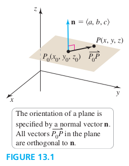
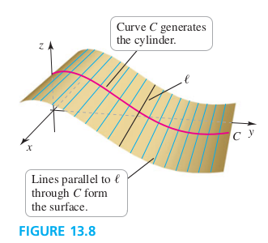
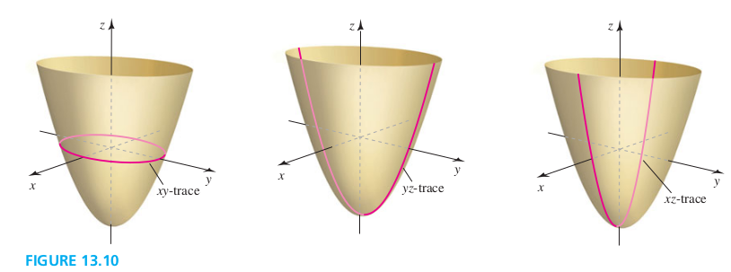

Section 13.1 Planes and Surfaces
Equations of Planes
Plane in \R^3
Given a fixed Point and a nonzero normal vector n, the set of pointsP in \R^3 for which is orthogonal to n is called a plane.

Genernal Equations of a Plane in \R^3
The plane passing through the point with a nonzero normal vector is described by the equation
Or
where
Examples
1. Equations of a plane Find an equation of the plane passing through with a normal vector
Solution
2. A plane through three points Find an equation of the plane that passes through the (noncollinear) points , , and
Solution
3. Properties of a plane Let Q be the plane described by the equation
a. Find a vector normal to Q.
b. Find the points at which Q intersects the coordinate axes and plot Q.
c. Describe the sets of points at which Q intersects the yz-plane, the xz-plane, and the xy-plane.
Solution
a.
b. x-intercept, ; y-intercept, ; z-intercept, ;
c. Let , Q gives m which decribes a line in yz-plane. Similar for xy-plane and xz-plane.
Parallel and Orthogonal Planes
Two distinct planes are parallel if their respective normal vectors are parallel (that is, the normal vectors are scalar multiples of each other). Two planes are orthogonal if their respective normal vectors are orthogonal (that is, the dot product of the normal vectors is zero).
Examples
6. Intersecting planes Find an equation of the line of intersection of the planes Q: and R: .
Solution
Cylinders and Traces
Cylinder
Given a curve C in a plane P and a line / not in P, a cylinder is the surface consisting of all lines parallel to / that pass through C (Figure 13.8).

Trace
A trace of a surface is the set of points at which the surface intersects a plane that is parallel to one of the coordinate planes. The traces in the coordinate planes are called the xy-trace, the xz-trace, and the yz-trace (Figure 13.10).

Quadric Surfaces
Quadric surfaces are described by the general quadratic (second-degree) equation in three variables,
Table 13.1
| Name | Standard Equation | Features | Graph |
|---|---|---|---|
| Ellipsoid | All traces are ellipses |  |
|
| Elliptic paraboloid | |||
| Hyperboloid of one sheet | |||
| Hyperboloid of two sheets | |||
| Elliptic cone | |||
| Hyperbolic paraboloid |